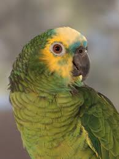
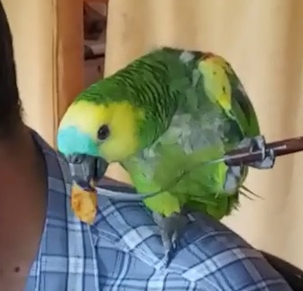

El Terrible Toto
 |
TOTO Levrand, localmene llamdo "El Chapo Guzman" es un Loro Amazonico Aestiva Frentiazul , nacio en la provincia
de Formosa, ciudad de Formosa hace ya 5 años
es muy, pero muy bullicioso, vive cantando (se descabeza con la música electrónica y el chamamé),
llama a todos, siempre se burla de los perros engañandolo que yo soy el que los llamo,
él habla igual a un niño, es un muy amable SER, siempre y cuando no se vuelva rencorozo (porque me fui a trabajar
y no vine al horario normal) ya que me corre por toda la casa, retandome.
|
| El Toto Mide de los 34 cm, desde su pico a la cola, pesa 320 grs, Es de color verde, frente y bridas azuladas,
garganta, mejilla y píleo amarillos. El borde de las alas es rojo o amarillo, con las coberteras alares
rojas. Ojos de color naranja. El pico de color negruzco y las patas grises.
Los ejemplares jóvenes presentan una coloración distinta a la de los adultos;
la cabeza es de color verde, azulado y amarillo pálido. El borde superior del ala y el vértice
flexor de la misma son de una tonalidad más pálida. La pupila es de color gris oscuro en las crías
hasta que alcanzan el año de edad.
En esta especie el sexo de los ejemplares no se distingue a simple vista. Hay personas que afirman
que los machos son más grandes que las hembras o que el tamaño del pico y la cabeza entre el macho y la
hembra es diferente, pero estas distinciones son totalmente subjetivas y necesitan de ojos expertos para
poder acertar con un mínimo de garantías.
|

|